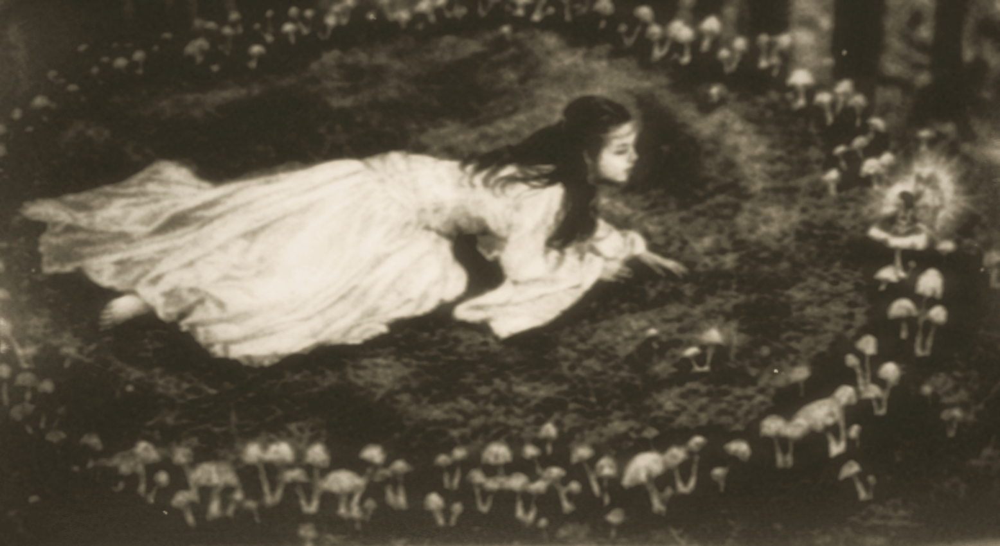
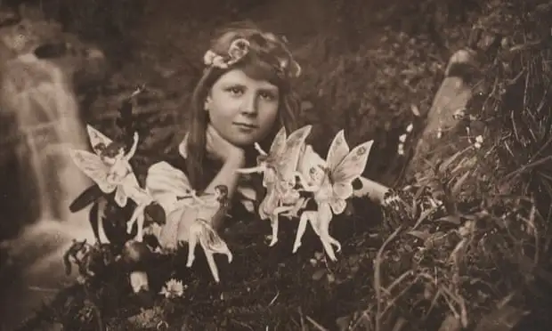
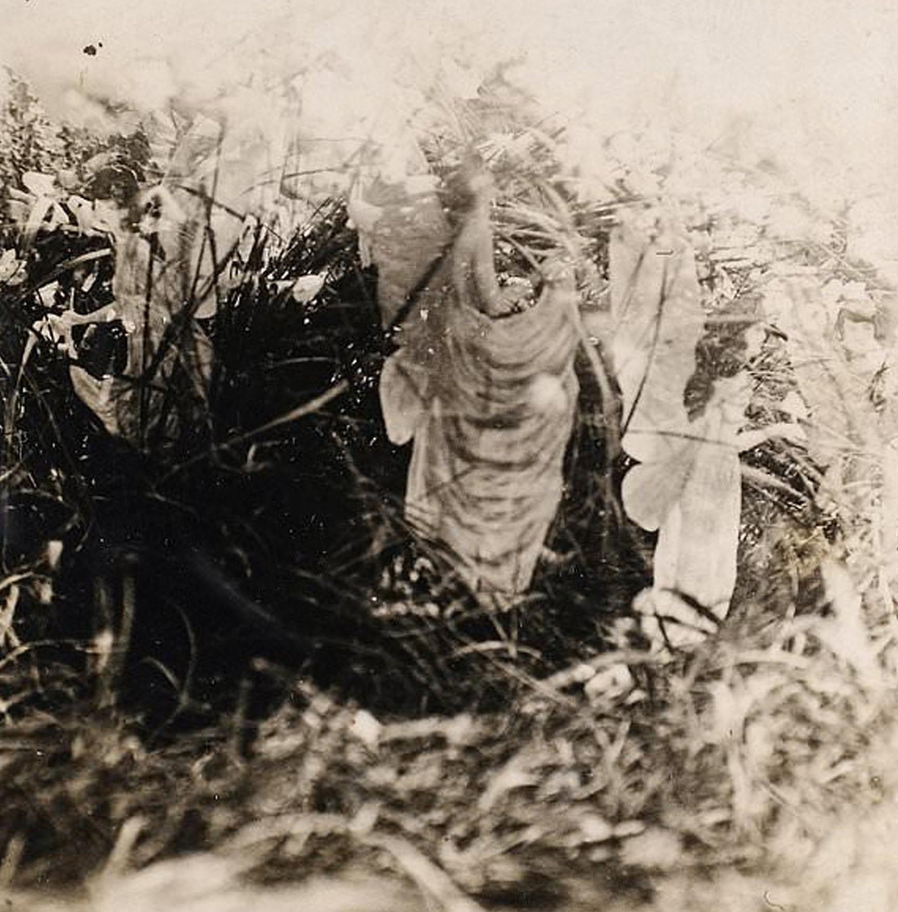

<div class="container-fluid py-4">
    <div class="row justify-content-center">
        
        <div class="col-md-2 d-none d-md-block"></div>

        <div class="col-md-8 bg-white p-4 shadow-sm rounded-3">
            
            <div class="text-center mb-5">
                
                <h2 class="display-5 text-cafe">Grata sea vuestra llegada</h2>
            </div>

            <p>
                Has cruzado el umbral de lo evidente. Estás en un rincón secreto del internet, un refugio de datos y sombras que no aparece en los mapas de quienes buscan solo respuestas superficiales. 
                Aquí, el ruido del mundo se apaga para dejar hablar a la grieta y al susurro de lo que vuestra historia llama leyenda. No has llegado por error, sino por afinidad: 
                este es el espacio donde la lógica se rinde ante lo que no puede ser nombrado, y donde descifrar la huella feérica en la conspiración del asfalto es la única forma de pertenecer.
            </p>

            <div class="text-center my-5">
                
                <h3 class="mt-4 text-cafe">La puerta se ha cerrado tras de ti</h3>
            </div>

            <p>
                No busques aquí el consuelo de las palabras vacías, sino la compañía latente de quienes habitamos la intemperie del sentido. 
                Has llegado al lugar donde el lenguaje renuncia a poseer y se limita a ser polen, ceniza y posibilidad. 
                Aquí, los relatos se desvían de los cuentos infantiles para hundirse en la crónica de lo oculto y lo proscrito.
                Atiende al murmullo de las alas que el hierro ha intentado callar y al rastro de los nombres que la luz del día teme pronunciar. 
                En esta biblioteca de lo invisible, cada sombra es un testimonio y cada silencio, una verdad que reclama su lugar en el mundo.
            </p>

            <p class="mb-5">Ahora, reconoce tu destierro en el nuestro, y que tu estancia sea el inicio de un necesario naufragio.</p>

            <div class="vacio"></div>

            <div class="archivo-contenedor">
                <p class="puente">“Antes de que tus ojos se acostumbren a esta penumbra, mira lo que el olvido ha devuelto a la orilla...”</p>
                
                <h4 class="text-cafe">Archivo I: El desvío</h4>
                
                <p class="fw-bold">No fue el azar; fue la sed de la llaga lo que la condujo al círculo...</p>

                <p>
                    El bosque seguía allí, pero se había vuelto una elegía de ramas, un templo de ausencias donde cada hoja parecía pedir perdón por existir. No era un lugar, era el testimonio físico de una omisión. La luz no iluminaba; era una penumbra cansada que se arrastraba entre los troncos como un animal que ha perdido su rastro. Salió del círculo con un vuelco en el diafragma, buscando el alivio de la urbe, pero la vía se había evaporado. Donde antes hubo monolitos y ruido plomizo, ahora solo quedaba la soberanía de la raíz huérfana y la piedra en duelo. Era el rostro de la tierra antes de que nuestras manos la volvieran calva; una belleza herida que el humano ya no puede reconocer sin sentir que su propia existencia es un error de la memoria, un vacío que se ensancha hasta devorar cualquier pensamiento conocido.
                </p>

                <p class="my-4">
                    La joven corrió hasta que los pulmones le supieron a metal. Se acurrucó contra una roca, buscando la sequedad de lo conocido, cuando una voz, que parecía brotar de sus propias venas, le hendió el oído:
                </p>

                <p class="fst-italic text-cafe ps-3 border-start border-2 border-cafe mb-4">
                    — ¿Por qué lloras por la costra de lo inerte? —murmuró el aire con un aroma a pergamino olvidado—. ¿Tanto añoras el peso de la nada sobre tu lengua de arena?
                </p>

                <p>
                    Alzó la mirada y solo encontró el vacío habitado. Los murmullos empezaron a coser el aire a su alrededor, una conjuración de voces sin cuerpo que revoloteaban, erizando cada poro de su nuca con un aleteo frenético e invisible. La sed, esa vieja amiga de los extraviados, le quemó la garganta hasta volverla pólvora. Siguió el rastro de un viento que soplaba con la fatiga de un verdugo que ya no quiere matar, hasta que el sonido del agua la detuvo.
                </p>

                <p class="my-4">
                    Se entregó al río, dejándose flotar como una ofrenda que ya no desea pertenecerse. Entonces, la vio.
                </p>

                <p>
                    Era una aparición vestida de humo y olvido, con la juventud de lo que nunca muere y la tristeza de un veneno que se bebe para dejar de sentir. Tras ella, se desplegaban unas alas translúcidas, cubiertas por una trama de hilos albos y cenicientos, como el micelio que coloniza el silencio de las criptas. Eran membranas de una palidez de escarcha, casi invisibles, cuya belleza absoluta y sombría provocaba una parálisis en el centro del pecho. Generaban una reverencia que dolía, esa sacudida que surge ante lo sagrado cuando se vuelve una misma cosa con el abismo.
                </p>

                <p class="my-4">Su voz no era aire, era tierra cayendo sobre un ataúd:</p>

                <p class="fst-italic text-cafe ps-3 border-start border-2 border-cafe mb-4">
                    — Has llegado al confinamiento, al sitio donde la mirada no tiene retorno. Esto que ves no es el pasado, es nuestro reino de ceniza, la memoria de lo que vuestra especie decidió asesinar. Aquí tus leyes de luz y castigo son solo ruido seco. No busques el amparo del bien ni el refugio del mal; en esta intemperie esas palabras carecen de cuerpo. Aquí solo impera la simetría de la garra y la raíz: lo que respira, lo que se marchita y lo que devora para no ser olvido. Nuestra justicia es el silencio que se traga vuestras súplicas.
                </p>

                <p>
                    La aparición se inclinó, y el aire pesó más que el plomo. Ella, como tú ahora, creyó que este umbral era solo el refugio de una leyenda. Pero estar aquí es una sentencia de custodia, un pacto de sangre y sombra. Has sido señalada porque se te ha permitido mirar lo vedado, para que sientas en tu propia carne el invierno de nuestra estirpe. Pero no todo es pérdida en este destierro —dijo la sombra con una sonrisa que cortaba el aire—. Si logras sostener el peso de este silencio sin quebrarte, te entregaremos la visión de lo que subyace, la facultad de descifrar el lenguaje de lo inaudible y la soberanía de habitar los sueños de aquellos que te negaron. Tendrás el mundo a tus pies, no como dueña, sino como su pulso secreto.
                </p>

                <p class="my-4">
                    La mujer de humo rozó la frente de la joven con un dedo frío como la escarcha, sellando la iniciación.
                </p>

                <p class="fst-italic text-cafe ps-3 border-start border-2 border-cafe mb-4">
                    — Pero atiende bien: la traición a la Reina, o el más leve desprecio a este sacramento de sombras, se paga con un encierro eterno dentro de tu propia mente, donde cada recuerdo será un clavo y cada pensamiento, un verdugo. Aprende a caminar sobre este filo; este rincón no es un refugio para curiosos, sino el patíbulo de quienes no saben sostener la mirada ante el dolor de lo invisible. Puedes volver a tu celda de cemento y seguir respirando polvo, o puedes hundirte con nosotros y descubrir, por fin, a qué sabe la eternidad. La puerta se ha disuelto tras de ti. ¿Vas a quedarte a mirar cómo se desintegra tu antigua realidad?
                </p>

                <div class="text-center mt-5">
                    
                </div>
            </div>
        </div>

        <div class="col-md-2 d-none d-md-block"></div>
    </div>
</div>